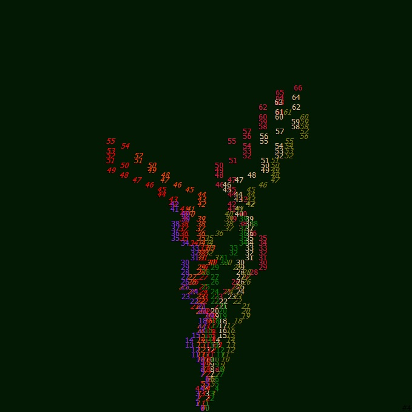
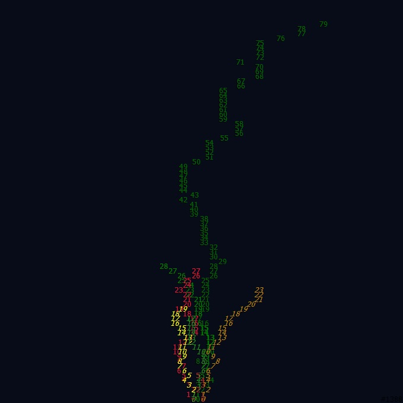
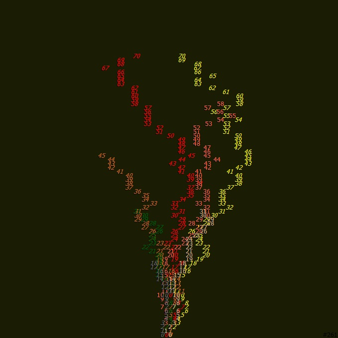
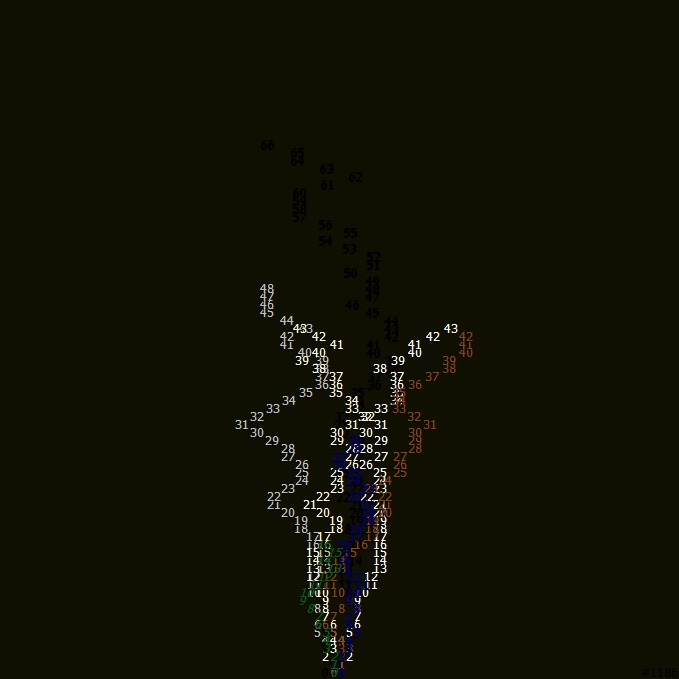

A generative system built around divergence from identical origins, shaped by geography, chance, and encoded seasonal logic.
Septets is a generative art project developed in C# (2021), producing over 1000 unique images (676×679). Each output originates from a shared structural seed, but evolves into distinct trajectories through stochastic processes and spatial constraints.
The system generates “life trees” that exist across four seasonal states. Each state is encoded through color, direction, and branching behavior, forming a visual mapping of transformation over time.
Although the underlying rules are constant, no two results are identical. The project demonstrates how deterministic systems can still produce radically divergent identities.
Septets begins from a simple premise: identical beginnings do not produce identical outcomes.
Each structure starts from the same generative system, but is immediately shaped by randomness, spatial logic, and environmental constraints.
The work explores a form of soft determinism, where rules define possibility but not outcome.
Seasonality is embedded as a structural layer rather than a narrative one—time appears as color, direction, and fragmentation within the system.

Spring state: emergence and initial branching from constrained seeds.

Summer state: expansion and directional growth under stable conditions.

Autumn state: divergence and fragmentation of structure.

Winter state: reduction, silence, and structural minimalism.
Year: 2021
Language: C#
Output: 1000+ generative images
Resolution: 676×679
System: Procedural generation, spatial recursion, stochastic branching, seasonal encoding
Each image is fully generated through algorithmic rules without manual intervention.
Septets reflects a core idea: even under identical initial conditions, systems diverge inevitably due to randomness, spatial constraints, and environmental encoding.
Identity is not preserved in origin—it is produced through deviation.